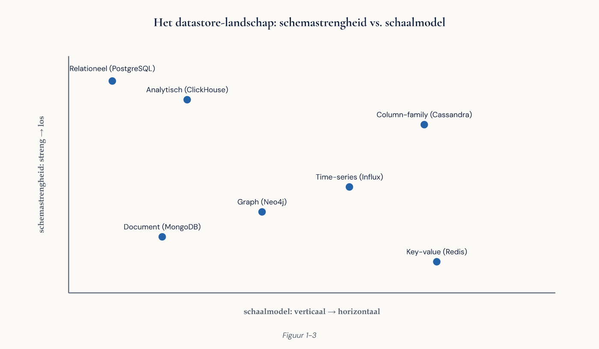

Deel 1 — Databases en het DBMS-landschap: waarom PostgreSQL
Cursus Databasemanagement — Niveau 1: Fundament Deelnemersreader | Dagdeel 1 van 10 Aansluiting: EDB PostgreSQL Associate (domein “PostgreSQL overview & architecture”, instapniveau)
Inhoud
- Leerdoelen
- De casus: Meridiaan Pensioen en Programma Open Pensioen
- Van bestanden naar databases
- Wat een DBMS precies doet
- Het DBMS-landschap in kaart
- ACID en BASE: twee beloften
- PostgreSQL gepositioneerd
- Versiebeleid, support en het ecosysteem
- Wanneer PostgreSQL wél, en wanneer niet
- De keuze in een organisatie: hoe die werkelijk verloopt
- Rollen rond de database
- Aansluiting op de certificering
- Kernbegrippen
- Verder lezen
1. Leerdoelen
Na dit deel kun je:
- uitleggen welke problemen een DBMS oplost die een verzameling bestanden niet oplost;
- de hoofdcategorieën van datastores benoemen en per categorie het typische gebruiksscenario aangeven;
- ACID en BASE tegenover elkaar zetten en uitleggen waarom die keuze een businesskeuze is en geen technische smaakkwestie;
- PostgreSQL positioneren ten opzichte van commerciële en open-source alternatieven, inclusief licentie- en supportmodel;
- het versie- en supportbeleid van PostgreSQL toepassen op een concrete upgradevraag;
- een onderbouwd advies geven over de vraag “is PostgreSQL hier de juiste keuze?” en dat advies verdedigen tegenover een opdrachtgever.
Let op de laatste twee leerdoelen. In deze cursus tellen ze even zwaar als de technische. Een DBA die niet kan uitleggen waaróm iets zo staat, wordt overruled door iemand die harder praat.
2. De casus: Meridiaan Pensioen en Programma Open Pensioen
Alle opdrachten in niveau 1 spelen zich af bij Meridiaan Pensioen, een middelgrote Nederlandse pensioenuitvoerder. Meridiaan voert de regelingen uit voor circa 340.000 deelnemers en 4.100 aangesloten werkgevers.
De situatie bij aanvang:
- De kernadministratie draait op een pakket van een externe leverancier, met een gesloten database eronder. Meridiaan kan die alleen benaderen via nachtelijke exports.
- Om die exports heen is in de loop van vijftien jaar een schil gegroeid: Access-databases, Excel-bestanden op netwerkschijven, een SharePoint-lijst met werkgevermutaties, en twee kleine applicaties die een collega ooit “even” heeft gebouwd.
- Niemand weet precies wie welk bestand bijhoudt. Bij de laatste kwartaalrapportage bleken drie afdelingen drie verschillende deelnemersaantallen te hanteren, alle drie verdedigbaar.
Programma Open Pensioen is de meerjarige verandering waarin Meridiaan die schil vervangt door een eigen, beheerste datalaag. Jij bent in dit programma aangetrokken als beginnend databasespecialist. Je eerste opdracht in deel 1 is niet bouwen, maar oordelen: het programmateam moet vastleggen op welk databaseplatform de nieuwe datalaag komt te staan, en de stuurgroep wil daar een onderbouwing bij.
Drie stemmen die je in de casus steeds terug zult horen:
| Rol | Naam | Wat die persoon wil |
|---|---|---|
| Programmamanager | Karin de Wolff | Voorspelbaarheid, geen verrassingen in de begroting |
| Enterprise-architect | Tarik Bousaid | Aansluiting op de doelarchitectuur, geen nieuwe lock-in |
| Beheerhoofd IT | Ruud Slager | Iets waar zijn team van vier man 's nachts niet wakker van ligt |

3. Van bestanden naar databases
De schil bij Meridiaan is een tekstboekvoorbeeld van wat er misgaat zonder DBMS. Zes klassieke problemen, elk terug te vinden in de casus:
Redundantie. Hetzelfde deelnemersadres staat in vier bestanden. Elke kopie is een kans op afwijking.
Inconsistentie. Als een adres in één bestand wordt gewijzigd en in de andere drie niet, is er geen instantie die dat merkt. De data spreekt zichzelf tegen zonder dat iemand het ziet.
Gebrek aan gelijktijdigheid. Twee medewerkers openen hetzelfde Excel-bestand. De laatste die opslaat, wint. Het werk van de eerste is weg, zonder foutmelding.
Geen integriteitsbewaking. Niets belet iemand om een mutatie vast te leggen op een werkgeversnummer dat niet bestaat, of een geboortedatum in 2087 in te typen.
Geen herstelbaarheid. Valt de netwerkschijf uit tijdens het opslaan, dan is de toestand van het bestand onbepaald. De back-up is van vannacht; het werk van vandaag is verdwenen.
Geen toegangsbeheer op gegevensniveau. Wie bij het bestand kan, kan bij álles in het bestand. Een medewerker die alleen werkgeverdata mag zien, ziet ook burgerservicenummers.
Een DBMS bestaat om precies deze zes problemen te adresseren. Alles wat je in de rest van deze cursus leert — transacties, constraints, WAL, rollen, MVCC — is uiteindelijk een antwoord op één of meer punten uit dit lijstje. Houd de lijst bij de hand; we komen er in elk deel op terug.

4. Wat een DBMS precies doet
Een databasemanagementsysteem is de software tussen de gebruiker of applicatie en de opgeslagen gegevens. De database zelf is de verzameling gegevens; het DBMS is het programma dat die beheert. Dat onderscheid lijkt pedanterig, maar je hebt het nodig zodra je in PostgreSQL het verschil tussen een cluster, een database en een schema leert (deel 2).
De kernfuncties:
- Definitie — vastleggen welke gegevens er zijn en welke vorm ze hebben (DDL, deel 6).
- Manipulatie — toevoegen, wijzigen, verwijderen, opvragen (DML en query’s, deel 3 en 4).
- Transactiebeheer — groepen bewerkingen die volledig slagen of volledig mislukken (deel 7).
- Gelijktijdigheidsbeheer — meerdere gebruikers tegelijk, zonder elkaars werk te vernietigen (deel 7, verdiept in niveau 2 deel 15).
- Herstel — na een crash terug naar een consistente toestand (deel 7, uitgewerkt in niveau 2 deel 17).
- Beveiliging en autorisatie — wie mag wat (deel 9, verdiept in niveau 2 deel 21).
- Optimalisatie — dezelfde vraag zo goedkoop mogelijk beantwoorden (deel 8, verdiept in niveau 2 deel 13).
Een principe dat je hier al moet internaliseren: data-onafhankelijkheid. De manier waarop gegevens fysiek zijn opgeslagen, mag geen invloed hebben op de manier waarop applicaties ze bevragen. Voeg je in deel 8 een index toe, dan verandert er niets aan de query’s — alleen aan de snelheid. Dat is geen toevallige eigenschap; het is de belangrijkste reden dat relationele databases veertig jaar hebben overleefd terwijl de hardware eronder volledig is vervangen.
5. Het DBMS-landschap in kaart
“Database” is geen enkelvoudige categorie meer. Voor je advies aan de stuurgroep moet je het landschap kunnen schetsen.
5.1 Relationeel (RDBMS)
Gegevens in tabellen met rijen en kolommen, bevraagd met SQL, met sterke integriteitsbewaking en transacties. Voorbeelden: PostgreSQL, Oracle Database, Microsoft SQL Server, MySQL/MariaDB, IBM Db2.
Typisch gebruik: administratieve systemen waarin correctheid zwaarder weegt dan absolute schaal — precies het Meridiaan-profiel.
5.2 Documentstores
Gegevens als zelfbeschrijvende documenten (meestal JSON), zonder vooraf afgedwongen schema. Voorbeeld: MongoDB.
Typisch gebruik: gegevens waarvan de vorm per exemplaar verschilt en snel evolueert — productcatalogi, contentbeheer, logging van gebeurtenissen met wisselende attributen.
5.3 Key-value stores
Een sleutel, een waarde, extreem snel opvragen. Voorbeelden: Redis, Amazon DynamoDB.
Typisch gebruik: caching, sessiebeheer, wachtrijen. Zelden de bron van waarheid.
5.4 Column-family stores
Gegevens per kolomfamilie opgeslagen, ontworpen voor schrijfvolume over veel machines. Voorbeelden: Apache Cassandra, HBase.
Typisch gebruik: telemetrie, klikstromen, IoT-metingen op miljardenschaal.
5.5 Graph databases
Knopen en relaties als eersteklas burgers. Voorbeeld: Neo4j.
Typisch gebruik: netwerkanalyse, fraudedetectie, aanbevelingen — vragen waarin het pad tussen entiteiten belangrijker is dan de entiteiten zelf.
5.6 Time-series databases
Geoptimaliseerd voor metingen met een tijdstempel. Voorbeelden: InfluxDB, TimescaleDB (een PostgreSQL-extensie).
5.7 Analytische/kolomgeoriënteerde platformen
Geoptimaliseerd voor het lezen van enorme hoeveelheden rijen over weinig kolommen. Voorbeelden: Snowflake, Google BigQuery, ClickHouse. Dit is het OLAP-domein tegenover het OLTP-domein van de klassieke RDBMS — een onderscheid dat we in niveau 2 uitwerken.

Waarschuwing tegen het modelvoorbeeld. Elke categorie hierboven wordt in verkoopmateriaal gepresenteerd als de opvolger van de vorige. Dat is onjuist. Ze zijn specialisaties. De vraag is nooit “wat is het beste type database”, maar “welk type past bij deze werklast”. In de NoSQL-elective werken we die afweging volledig uit; in niveau 2, deel 21, krijg je het overzichtsdeel.
6. ACID en BASE: twee beloften
6.1 ACID
Klassieke transactiegarantie, in deel 7 volledig uitgewerkt. Kort:
- Atomicity — een transactie gebeurt geheel of helemaal niet.
- Consistency — een transactie brengt de database van de ene geldige toestand naar de andere; alle regels blijven gelden.
- Isolation — gelijktijdige transacties beïnvloeden elkaar niet op een manier die zichtbaar is.
- Durability — wat bevestigd is, is bevestigd, ook als de stroom een seconde later uitvalt.
6.2 BASE
Het alternatief uit de gedistribueerde wereld:
- Basically Available — het systeem antwoordt altijd, desnoods met verouderde gegevens.
- Soft state — de toestand mag tijdelijk afwijken tussen knooppunten.
- Eventual consistency — gegeven genoeg tijd zonder nieuwe wijzigingen convergeren alle kopieën.
6.3 Waarom dit een businesskeuze is
Stel: Meridiaan verwerkt een waardeoverdracht. Bedrag af bij fonds A, bedrag bij bij fonds B. Onder BASE is er een venster waarin het geld nergens staat, of overal. Voor een tijdlijn op een website is dat acceptabel. Voor een pensioenaanspraak is het dat niet — niet technisch, maar juridisch en reputationeel.
Formuleer het daarom nooit als “ACID is veiliger”. Formuleer het als: hoe lang mag deze gegevenssoort onjuist zijn, en wie draagt de schade als dat gebeurt? Dat is een vraag die de business kan beantwoorden en jij niet.
7. PostgreSQL gepositioneerd
PostgreSQL is een open-source objectrelationeel DBMS met wortels in het POSTGRES-project aan de University of California, Berkeley (jaren tachtig), onder leiding van Michael Stonebraker. Sinds 1996 draagt het project de huidige naam en wordt het ontwikkeld door een wereldwijde community, niet door één bedrijf.
Wat het onderscheidt:
Licentie. De PostgreSQL License is een permissieve licentie in de familie van BSD/MIT. Geen licentiekosten, geen gebruiksbeperkingen, geen verplichting om afgeleid werk vrij te geven. Voor Meridiaan betekent dat: geen core-gebaseerde afrekening, geen audit-risico, geen onderhandeling bij groei van het aantal cores.
Governance. Geen bedrijf dat de licentie eenzijdig kan wijzigen. Dat is relevant sinds meerdere open-source projecten hun licentie hebben aangescherpt zodra de commerciële belangen wijzigden. Voor Tarik (enterprise-architect) is dit vaak het doorslaggevende argument tegen lock-in.
Uitbreidbaarheid. PostgreSQL is ontworpen om uitgebreid te worden: eigen datatypen, eigen operatoren, eigen indextypen, eigen procedurele talen. Daaruit is een ecosysteem van extensies gegroeid: PostGIS (geodata), TimescaleDB (tijdreeksen), pgvector (vectoren voor AI-toepassingen), Citus (sharding), pg_stat_statements (querystatistieken). Deze uitbreidbaarheid is de reden dat PostgreSQL zoveel gespecialiseerde databases gedeeltelijk kan vervangen.
Standaardconformiteit. PostgreSQL volgt de SQL-standaard nauwer dan de meeste concurrenten. Dat maakt kennis overdraagbaar en migratie minder pijnlijk.
Rijk typesysteem. Naast de gebruikelijke typen: arrays, jsonb (geïndexeerd, doorzoekbaar JSON), ranges, uuid, geometrische typen, en eigen enum- en samengestelde typen. jsonb verdient bijzondere vermelding: het maakt documentopslag mogelijk binnen een transactionele relationele database. In veel projecten is dat de reden dat er géén aparte documentstore nodig blijkt.
7.1 Tegenover de alternatieven
| Aspect | PostgreSQL | Oracle / SQL Server | MySQL / MariaDB |
|---|---|---|---|
| Licentiekosten | Geen | Substantieel, per core | Geen (community) |
| Lock-in | Laag | Hoog | Middel (afhankelijk van eigenaar) |
| Standaardconformiteit | Hoog | Middel (eigen dialect) | Middel |
| Uitbreidbaarheid | Zeer hoog | Beperkt | Beperkt |
| Support | Via commerciële partijen | Van de leverancier | Via commerciële partijen |
| Beschikbaarheid van beheerders in NL | Goed en groeiend | Goed | Goed |
De eerlijkheid gebiedt de tegenkant te noemen: bij Oracle en SQL Server koop je één telefoonnummer voor als het misgaat, inclusief contractuele aansprakelijkheid. Dat is voor Ruud (beheerhoofd) een reëel argument. Het antwoord is niet “dat heb je niet nodig”, maar “dat kun je apart inkopen bij een supportpartij” — waarmee het een kostenvergelijking wordt in plaats van een geloofskwestie.
8. Versiebeleid, support en het ecosysteem
8.1 Versienummering
Sinds versie 10 gebruikt PostgreSQL een tweedelig schema: een hoofdversie (17, 18, …) en een subversie (17.1, 17.2, …). Hoofdversies verschijnen ongeveer jaarlijks en kunnen gedragswijzigingen bevatten; subversies zijn uitsluitend correcties en beveiligingsherstel.
8.2 Ondersteuningsvenster
Elke hoofdversie wordt vijf jaar ondersteund na verschijnen. Daarna verschijnen er geen beveiligingsherstellingen meer. Dat betekent voor Meridiaan een concrete beheerverplichting: plan de hoofdversie-upgrade als terugkerende gebeurtenis, niet als project. Een organisatie die dat nalaat, staat over vijf jaar op een niet-ondersteunde versie en heeft dan een migratie in plaats van een upgrade.
Voor de exacte versienummers, einddata en de bijbehorende upgradepaden: zie de Toolbijlage. Die verwijzing zul je in de hele cursus tegenkomen — alles wat versiegebonden of klikpadafhankelijk is, staat daar en niet in de reader, zodat de reader bruikbaar blijft als de versies opschuiven.
8.3 Het ecosysteem waar je in de praktijk mee werkt
- psql — de opdrachtregelclient; de gemeenschappelijke taal van alle PostgreSQL-beheerders. We gebruiken die vanaf deel 3.
- pgAdmin en DBeaver — grafische clients.
- pg_dump / pg_restore — logische back-up (deel 7 introductie, niveau 2 deel 17 volledig).
- Barman, pgBackRest — back-upbeheer op productieschaal (niveau 2 deel 17).
- Patroni, PgBouncer — hoge beschikbaarheid en connection pooling (niveau 2 deel 19).
- pgaudit, pg_stat_statements — auditing en querystatistieken (niveau 2 deel 20).
9. Wanneer PostgreSQL wél, en wanneer niet
Een advies dat alleen voordelen noemt, wordt niet geloofd. Leer daarom het tegengeluid uit je hoofd.
PostgreSQL past goed bij:
- transactionele administraties met integriteitseisen (Meridiaan);
- gemengde werklasten waarin relationele en documentachtige gegevens naast elkaar bestaan (
jsonb); - organisaties die lock-in willen vermijden of licentiekosten willen drukken;
- gespecialiseerde behoeften die een extensie afdekt (geodata, tijdreeksen, vectoren).
PostgreSQL past minder goed bij:
- analytische werklasten op petabyteschaal. Voor scans over miljarden rijen zijn kolomgeoriënteerde platformen fundamenteel efficiënter. PostgreSQL kan het, maar je vecht tegen het ontwerp.
- wereldwijd verspreide schrijfbelasting met lage latentie op elk continent. Dat is Cassandra-terrein. (Niveau 3, deel 23, behandelt waarom dit een consequentie is van CAP en niet van implementatiekwaliteit.)
- extreme sleutel-waarde-doorvoer, waar Redis ordes van grootte sneller is.
- organisaties zonder enige interne kennis en zonder bereidheid support in te kopen. Dit is het eerlijkste tegenargument: gratis software is niet gratis in beheer.
- applicaties die uitsluitend gecertificeerd zijn voor een ander platform. Bij pakketsoftware bepaalt de leverancier de database, niet jij.

10. De keuze in een organisatie: hoe die werkelijk verloopt
In de theorie kiest een organisatie op basis van eisen. In de praktijk spelen vijf factoren mee die je moet benoemen omdat ze anders ongezien de doorslag geven:
- Bestaande kennis. Een beheerteam dat twintig jaar SQL Server doet, is een reëel activum. Dat weggooien kost meer dan een licentie.
- Bestaande contracten. Een lopende enterprise-overeenkomst kan de marginale kosten van “nog een database” bijna nul maken.
- Inkoop- en beveiligingsbeleid. Sommige organisaties eisen een leverancier met contractuele aansprakelijkheid. Dan wordt het PostgreSQL met een supportcontract, niet PostgreSQL zonder.
- Cloudstrategie. Staat de organisatie op Azure, dan is een managed PostgreSQL-dienst iets anders dan zelf beheren — met eigen beperkingen (niveau 3, deel 25).
- Wie het hardst praat. Niet zelden beslissend, en de reden dat je onderbouwing schriftelijk moet zijn.
Een bruikbare structuur voor je advies, die je in het werkboek gaat toepassen:
Eis → wegingsfactor → score per platform → conclusie → expliciet benoemde risico’s van de aanbevolen optie.
Die laatste stap slaan beginners over. Juist die maakt het advies geloofwaardig: je laat zien dat je de nadelen kent en er een antwoord op hebt.
11. Rollen rond de database
| Rol | Kernvraag | In deze cursus |
|---|---|---|
| Applicatieontwikkelaar | Hoe kom ik bij mijn gegevens? | Delen 3-8 |
| Databaseontwerper / datamodelleur | Hoe leg ik de werkelijkheid vast? | Deel 5, 6 |
| DBA (beheer) | Blijft dit draaien en herstelbaar? | Niveau 2 |
| Data-architect | Hoe past dit in het geheel? | Niveau 3 |
| Security officer / privacyfunctionaris | Wie ziet wat, en kunnen we dat aantonen? | Deel 9, niveau 2 deel 21 |
In kleinere organisaties — en Meridiaan is er zo een — draagt één persoon meerdere van deze petten. Dat maakt het belangrijker, niet minder belangrijk, om te weten wélke pet je op hebt als je een beslissing neemt. Veel productie-incidenten ontstaan doordat iemand als ontwikkelaar een beheerbeslissing nam.
12. Aansluiting op de certificering
Deze cursus bereidt voor op de EDB-certificeringslijn voor PostgreSQL: de Associate-certificering na niveau 1, de Professional-certificering na niveau 2, en de architectgerichte clustercertificering na niveau 3.
Twee dingen moet je daarover weten:
- Deze cursus is voorbereiding, geen vervanging van het officiële examenmateriaal. Bij aanschaf van een EDB-examen krijg je uitsluitend het examen, geen lesmateriaal — dat gat vult deze cursus. Raadpleeg altijd de actuele examenblauwdruk van EDB voor de definitieve onderwerplijst; die kan per versie wijzigen.
- De examens zijn versiegebonden. Welke PostgreSQL-versie het examen op dit moment toetst, staat in de Toolbijlage, niet hier.
De relevante examenonderwerpen voor dit deel zijn beperkt: de positionering en architectuurschets van PostgreSQL. Het echte examenwerk begint in deel 2.
13. Kernbegrippen
Database — een geordende verzameling gerelateerde gegevens. DBMS — de software die databases beheert. Data-onafhankelijkheid — wijzigingen in fysieke opslag raken de logische bevraging niet. RDBMS — relationeel DBMS: gegevens in tabellen, bevraagd met SQL. ACID — atomiciteit, consistentie, isolatie, duurzaamheid. BASE — basically available, soft state, eventual consistency. OLTP — transactieverwerking: veel kleine bewerkingen. OLAP — analyse: weinig, grote leesbewerkingen. Extensie — uitbreidingsmodule die PostgreSQL functionaliteit toevoegt. Lock-in — afhankelijkheid van één leverancier waardoor wisselen onevenredig duur wordt.
14. Verder lezen
- De officiële PostgreSQL-documentatie, hoofdstuk “Preface” en “Tutorial” — de beste startdocumentatie in het vakgebied.
- Het PostgreSQL-versiebeleid en de ondersteuningskalender op de projectwebsite (actuele data: zie Toolbijlage).
- C.J. Date, An Introduction to Database Systems — voor wie het relationele model bij de bron wil lezen. We gebruiken dit in deel 2.
Volgende deel: het relationele model en de PostgreSQL-architectuur. Je leert dan wat er werkelijk gebeurt tussen het moment dat je op Enter drukt en het moment dat er een antwoord terugkomt.